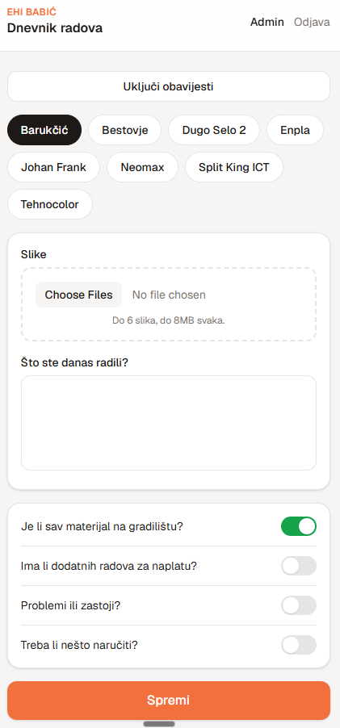

The problem
Important site updates were easy to lose.
Daily work, photos, missing materials, and delays needed a consistent record that was fast enough for the team to use on site.
Client project · Private app
A private construction work diary for capturing site updates, photos, material needs, and delays as they happen.

The problem
Daily work, photos, missing materials, and delays needed a consistent record that was fast enough for the team to use on site.
What I built
Workers choose the relevant site, add a daily update and photos, then flag practical follow-ups such as material shortages, extra work, or delays.
How it works
My role
I translated the day-to-day workflow into a simple interface and built the application around the people who need to use it.
Privacy
The live app contains client data, so this case study shows the product concept and workflow rather than private entries or site information.
Technical foundation